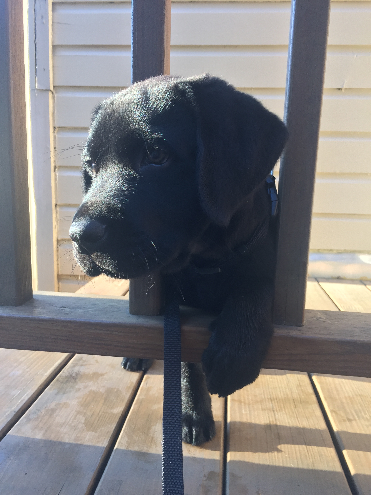

My dog Bauer is a 6 month old black labrador puppy and he is adorable! He weighs about 65 pounds and he is very muscular, but don't let that fool you... He is the sweetest! Since he is a black labrador, he is extremely friendly and a great family dog!
Bauer LOVES playing with his toys! Out of his many many toys, his favorites are his duck, bunny, and football. His duck and bunny are both fluffy with a small squeaker inside. We call the duck Ducky and we call the bunny Bun Bun! If you tell Bauer to go get one of his toys by name, he usually gets the one you asked for. He knows them by name! How adorable!! His football is probably his favorite because it is a squeaky football. When he chews on it and holds it in his mouth, it makes the an extremely loud squeak sound. He loves it! One of my favorite parts about my dog and his toys is that whenever he sees me, he grabs one of his toys in his mouth and parades around with it!
My dog's favorite things to do are playing with his squeaky football, eating, sleeping, and chewing on sweatshirt strings. He is super active and loves to play! He also loves other dogs and all people! Whenever Bauer sees a person or another dog, he gets very excited
Overall, my black lab puppy is a super fun and loving bundle of joy! It does typically take a bit of training as a puppy to potty train any dog and teach them basic commands. Sometimes it isn't super easy, but having the love, companionship, and fun that comes with taking care of a dog makes it all worth it!
Here are some places where you can learn more about labradors: